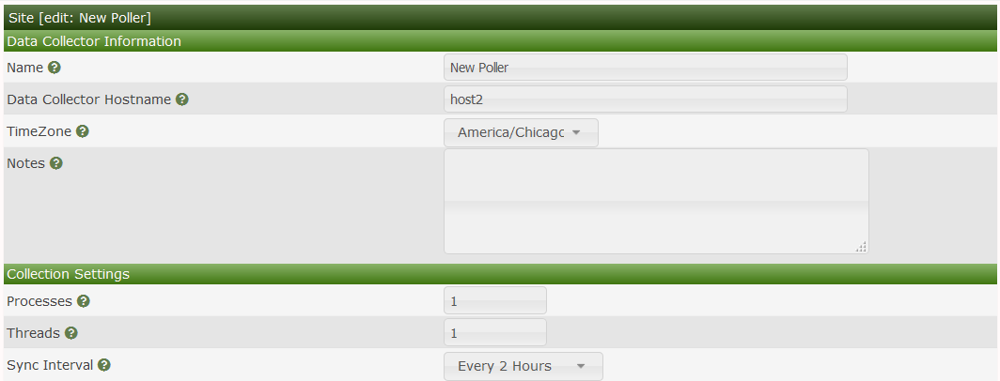

Cacti can support from one to many Data Collectors. There are two types of Data Collectors they are:
Due to the design of the Cacti Remote Data Collector, somone at the remote site, can actually login to that Data Collector and interact with it as if their Data Collector was the Main Data Collector. Additionally, if for some reason the Main Data Collector becomes unavailable due to a WAN outage for example, the data for the Devices it manages will be cached locally until such time as the Main Data Collector is reachable again.
Once the Main Data Collector becomes reachable, the Remote Data Collector will flush it cache back to the Main Data Collector and the system will normalize. Therefore, this is generally considered to be a more Highly Available (HA) design.
A good Enterprise Architecture for Cacti would include three Main Data Collectors which cactid systemd service was managed by keepalived, using GlusterFS as fully replicated File system for the Web Server, the logs, and the RRDfiles using MariaDB Galera as the fully fault tolerant database server.
Then, either using keepalived to a load balancer, you could load balance the connections across all three Main Data Collectors, using the MariaDB Galera database to maintain login session data. There are many good articles on setting up and using MariaDB Galera along with HAProxy or load balancers from Citrix and others to direct read and write traffic to the correct Galera instance server. The bottom line is that Cacti provides the opportunity to have a Highly Available (HA) setup today.
That HA setup will not be covered in this chapter, but may be included at a later date.
When using multiple Data Collectors, Cacti requires the use of the boost module, which is now included in the main Cacti package. Therefore if you are planning on deploying multiple Data Collectors, you should become familiar with its use and why it is critical to a HA design.
In order for a Remote Data Collector to work with a Main Data Collector the Remote Data Collector must be able to talk to the Main Data Collector over both https and the MySQL protocol in a bidirectional fashion. Therefore, there are only two ports that are required to be open in order to fully leverage the multiple Data Collector architecture in Cacti.
The image below shows the current online collector (aka pollers). On this page, we can see the current, average, and max data collection times, the Data Collector processes and threads used, the number of Devices as well as what those Devices are polling. The Actions drop-down allows your to Enable, Disable, and Delete Remote Data Collectors. There is also a Full Sync option there. The Full Sync option will replicate key Cacti tables to the selected Remote Data Collectors for things like authentication, global settings, etc.
In the current Cacti design, you should not have to perform a Full Sync very often. It would mainly be used to push the user database and global settings to the remotes, after an outage if there were database changes during that outage.
The Main Data Collector resides on the central Cacti server. It also serves as the master Data Collector performing key maintenance operations for the entire system.
In the edit page below, you can see what options are available when editing the Main Data Collector. It is important the the hostname used is resolvable by the Remote Data Collectors.

When editing the Remote Data Collector in the images below, you can see that it shares many of the settings of the Main Data Collector with the addition of a TimeZone setting and MySQL/MariaDB credentials and a Test Connection button. Generally, these setting are only use during the initial setup of Cacti, and afterwards for diagnostics only.


We will need to make some config changes to the MySQL configuration to allow the Remote Data Collector to talk to the Main Data Collector.
mysql -u root mysql -e "GRANT ALL ON cacti.* TO cactidb@<ip of remote poller host> IDENTIFIED BY 'password';"
mysql -u root mysql -e "GRANT SELECT ON mysql.time_zone_name TO cacti@<ip of remote poller host> IDENTIFIED BY 'password';"
Next setup the Remote Data Collectors config.php located in <path_cacti>/include/config.php with the remote database details and credentials. Generally, you will not have to do this as part of the direct maintenance of the Remote Data Collector, the Remote Data Collector install process will force you to take these steps to complete the install. However, it's provided here for reference so that you understand the process.
#$rdatabase_type = 'mysql';
#$rdatabase_default = 'cacti';
#$rdatabase_hostname = 'localhost'; <<< IP/Hostname of main server
#$rdatabase_username = 'cactiuser';
#$rdatabase_password = 'cactiuser';
#$rdatabase_port = '3306';
#$rdatabase_retries = 5;
#$rdatabase_ssl = false;
#$rdatabase_ssl_key = '';
#$rdatabase_ssl_cert = '';
#$rdatabase_ssl_ca = '';
You will now need to install Cacti on the remote server selecting the New Remote Poller install option as shown below.
Copyright (c) 2004-2024 The Cacti Group